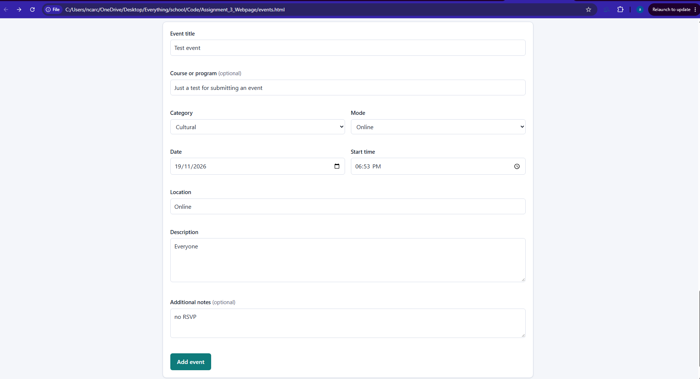
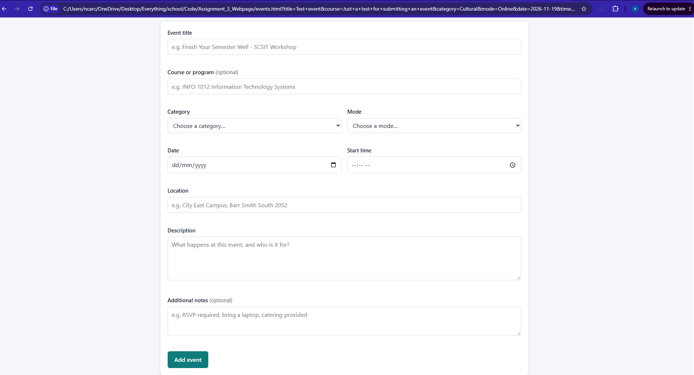
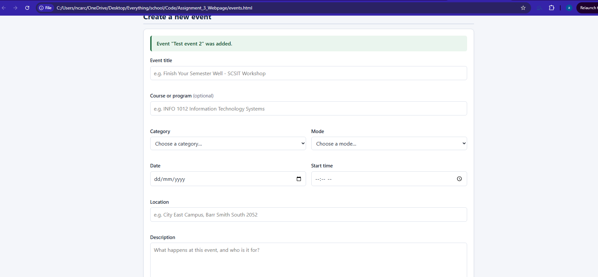

Error 1 — Submitting the create-event form reloaded the page
What happened
Filling in the create-event form and pressing Add event made the
whole page flash and reload. The form came back empty with its placeholder
text showing, and the green confirmation message never appeared. The address
bar changed from events.html to a long URL
Nothing appeared in the browser console, which made it harder to find.
Nothing had crashed, so there was no error message to read. The event itself
was still saved, because the application writes to
localStorage before the browser navigates, so on an application
without persistent storage the new event would have been lost entirely.
Screenshot: the form before submitting

Screenshot of the error

The address bar reads
events.html?title=Test+event&course=Just+a+test+for+submitting+an+event&category=Cultural&mode=Online&date=2026-11-19&time=…
The code that caused it
// js/events.js — the submit handler, before the fix
form.addEventListener('submit', function (event) {
// event.preventDefault(); <-- missing
const values = readForm();
const errors = validate(values);
if (Object.keys(errors).length > 0) {
showErrors(errors);
return;
}
values.id = nextId();
events.push(values); // the event IS added here...
saveEvents();
render(); // page reloads
});Screenshot of the working application

The corrected code
// js/events.js — the submit handler, after the fix
form.addEventListener('submit', function (event) {
event.preventDefault(); // <-- THE FIX: cancel the browser's default submit
const values = readForm();
const errors = validate(values);
if (Object.keys(errors).length > 0) {
showErrors(errors);
return;
}
values.id = nextId();
events.push(values);
saveEvents();
render();
});Troubleshooting explanation
How it was resolved. Calling
event.preventDefault() as the first line of the handler cancels
the browser's default behaviour for that event, so the page stays as it is
and only my code runs. So I put it first deliberately.
Resources used.
MDN
— Event.preventDefault(), and
MDN
— HTMLFormElement: submit event, which states that the default action of
a submit event is to send the form and navigate.